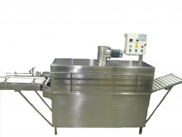
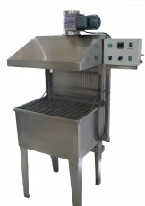

SISTEMA DE
TERMO CONTRACCIÓN
TUNEL DE TERMOCONTRACCIÓN

CARACTERISTICAS:
- Está disponible en 2 versiones de calentamiento
- Fácil acceso al panel de comandos.
- La velocidad de la cinta transportadora y la temperatura del agua son regulables.
BATEA AUTOMATICA DE TERMO CONTRACCIÓN

CARACTERISTICAS:
- Inmersión por sistema neumático temporizado
- Medición de temperatura digital
- Incluye campana con extractor a turbina.
- Calentamiento a pedido: vapor , eléctrico, quemador a gas
BATEA MANUAL DE TERMO CONTRACCIÓN

CARACTERISTICAS:
- Termómetro tipo reloj.
- Calentamiento por vapor. (Opcional: gas natural o eléctrico).
- Construcción total en acero inoxidable AISI 304.